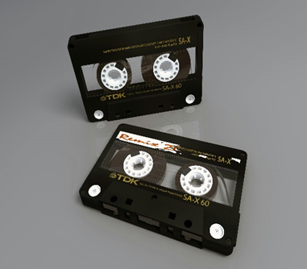
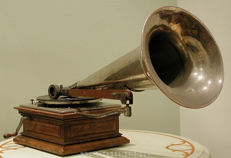
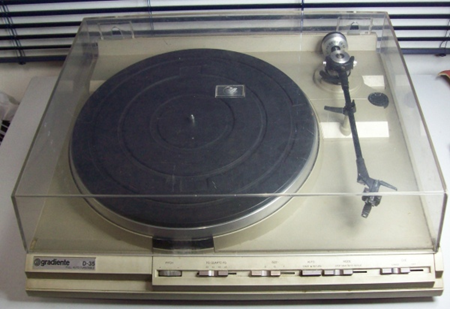
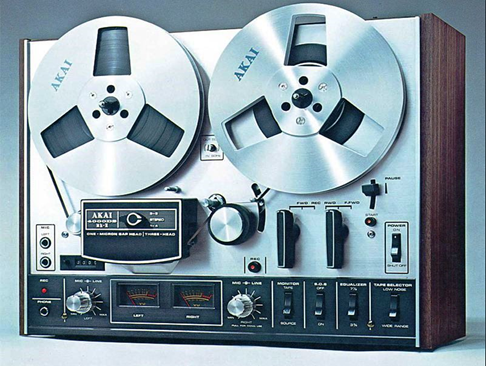

E aí raveiro!
Bem vindo a minha sala secreta, onde vamos conhecer sobre o universo da música eletônica suas vertentes e subvertes, para conhecer mais sobre clique no botão abaixo.

Bem vindo a minha sala secreta, onde vamos conhecer sobre o universo da música eletônica suas vertentes e subvertes, para conhecer mais sobre clique no botão abaixo.
Frequency Culture foi Fundada 01 de novembro de 2025, com o intuito de fornecer conhecimento sobre a música eletrônica, para quem não conhece e para quem já conhece, será abordado a história da sua origem, como foi sugindo os generos e subgeneros. Iremos trazer exemplos de som de cada generos e subgeneros para que você entenda as caracteristicas da cada tipo de som, e saber qual mais te atrai.
Aqui você vai encontrar exemplo das vertentes e subvertentes da eletrônica.
As verdadeiras conquistas são os amigos que fazemos pelo caminho.
Divirta-se escutando música eletrônica com os amigos e interagindo com o pessoal em nosso chat.
Música eletrônica é todo tipo de música criada ou modificada por aparelhos ou instrumentos eletrônicos como computadores, sintetizadores, sequenciadores, máquinas de ritmo e outros.
A música eletrônica pode ser caracterizada como um gênero de música que é criado e produzido usando instrumentos eletrônicos e eletromecânicos, vários instrumentos digitais ou a chamada tecnologia musical baseada em circuitos. Instrumentos de música eletrônica incluem um oscilador eletrônico, theremin ou um sintetizador, enquanto a engrenagem eletromecânica engloba o órgão hammond, piano eletrônico ou guitarra eletrônica. De modo geral, a música eletrônica pode ser feita a partir de uma extensa variedade de recursos sonoros, desde osciladores eletrônicos básicos até diversas instalações e softwares complexos de computadores, até microprocessadores. Esses sons são gravados e editados em fita e depois transformados em uma forma permanente que é reproduzida usando alto-falantes, sozinhos ou em combinação com instrumentos musicais comuns.
Embora alguns afirmem que o primeiro instrumento musical elétrico, dioniso dourado, foi possivelmente desenvolvido em 1748, marcando o nascimento da música eletrônica, o gênero provavelmente se originou, em sentido amplo, na virada dos séculos xix e xx. Naquela época, a eletrônica emergente permitia a experimentação com sons e, posteriormente, com dispositivos eletrônicos. Como resultado, vários instrumentos eletrônicos foram desenvolvidos, incluindo o telharmonium (um órgão elétrico desenvolvido em 1896), e mais tarde, nas décadas de 1920 e 1930, o órgão hammond (um órgão eletrônico), ondes martenot (um dispositivo eletrônico antigo tocado com teclados ou um anel ao longo de um fio), trautonium (um dos primeiros sintetizadores eletrônicos) ou o theremin (uma invenção eletrônica desenvolvida em 1930). Essas primeiras inovações foram usadas pela primeira vez para demonstrações e apresentações públicas, pois geralmente eram muito complexas, impraticáveis e incapazes de criar um som de qualquer magnitude e profundidade. Mais tarde, com a invenção dos tubos de vácuo, instrumentos menores, amplificados e mais práticos puderam ser desenvolvidos e foram gradualmente apresentados em composições recém-escritas. Um ponto de virada para a indústria da música em geral foi a invenção do fonógrafo (mais tarde conhecido como gramofone) por, independentemente, thomas alva edison e emile berliner por volta das décadas de 1870/1880.

Os fonógrafos foram os primeiros meios de gravação e reprodução de arquivos de áudio (os sons podiam ser capturados e salvos para uso futuro) e marcaram o início da indústria fonográfica que conhecemos hoje.

Os toca-discos lentamente se tornaram um item doméstico típico, com as gravações elétricas, hoje conhecidas como discos fonográficos, introduzidas em 1925.

Mais experimentos com toca-discos e inovações se seguiram na década de 1930, levando ao desenvolvimento de ajuste de velocidade do som e tecnologia de som em filme e à criação de colagens de som e som gráfico. Tais tecnologias foram então utilizadas na composição das primeiras trilhas sonoras de filmes, principalmente na alemanha e na rússia. Em 1935, a primeira fita de áudio prática foi inventada, tornando-se um ponto essencial no desenvolvimento histórico da música eletrônica.
Embora inventado em meados da década de 1930, mais desenvolvimento e melhorias na tecnologia de gravação em fita tiveram que ser feitos. As primeiras gravações de teste feitas em estéreo foram desenvolvidas em 1942 na alemanha, mas foram trazidas para os eua logo após a segunda guerra mundial e o primeiro gravador para uso comercial foi remodelado em 1948. Os compositores usaram este novo instrumento para novas experimentações musicais ao longo da década de 1950. O foco principal da época era o desenvolvimento da técnica e dos estilos musicais, com forte influência nos estilos e na música de vanguarda. Depois que músicos e artistas se tornaram mais familiarizados com o gravador, muitas composições historicamente importantes ganharam vida, seguidas pela utilização do meio em apresentações ao vivo.

Depois que os gravadores ganharam seu reconhecimento, bem como apoio financeiro, na europa, os primeiros estúdios de música eletrônica bem estruturados foram estabelecidos, principalmente em instalações de transmissão de propriedade e apoiadas pelo governo. Foi a partir de 1958 que os americanos puderam alcançar seus confrades europeus em termos de estabelecimentos de estúdio e outras inovações musicais, tanto tecnológica quanto artisticamente. Em 1948, a “musique concrète”, uma prática única e tipo de composição musical foi inventada em paris, frança, por dois compositores franceses, pierre schaeffer e pierre henry, no studio d'essai da radiodiffusion française (rdf). A técnica musique concrète se preocupava com a criação de colagens de fitas ou montagens de sons gravados. Todos esses sons - por exemplo efeitos sonoros, fragmentos musicais, vocais e outros sons ou ruídos produzidos por um indivíduo e seu ambiente - estavam sendo vistos como matérias-primas ‘concretas’ retiradas de meios e situações ‘concretas’. Portanto, a música concreta se opunha ao uso de osciladores, pois eram considerados fontes sonoras “artificiais”, “anti-humanistas” e, portanto, não “concretas”. Mais do que um estilo ou um movimento musical, a musique concrète pode ser vista como um conjunto de várias maneiras de transformar o som e criar música, usando técnicas e manipulações de fitas como alteração e variação de velocidade (também chamada de pitch shifting), emenda de fita, reprodução de fitas para trás, ou loops de feedback de sinal. A primeira grande composição de musique concreta foi symphonie pour un homme seul (sinfonia para um homem apenas) escrita em 1950 por schaffer e henry. O outro trabalho significativo do movimento foi a partitura de balé de henry, orphée, de 1953.
Karlheinz stockhausen, que logo trabalhou no estúdio de schaeffer em 1952, tinha uma ideia diferente das maneiras pelas quais os sons e a música podiam ser transformados e alterados e, portanto, se juntou ao estúdio de música eletrônica da wdr cologne, estabelecido por herbert einer. Em vez de sons ‘concretos’, stockhausen enfatizou sons puros, gerados eletronicamente e seu foco estava em modificações de som eletrônico em vez de manipulação de fita. O que ele queria alcançar, através de alterações sonoras, como filtragem e modulação, eram composições elétricas e acústicas autênticas, ou seja, instrumentações acústicas alteradas e acompanhadas por sons modificados e produzidos eletronicamente. Isso marcou o nascimento da elektronische musik, um ramo alemão da música eletrônica, que, ao contrário da musique concrète, enfatizava a grandeza e a 'pureza' dos sons eletrônicos e a necessidade de combinar a música eletrônica com uma composição seriada que usa ritmos, grupos ordenados de alturas e outros elementos musicais. Tanto o studio d'essai quanto o studio in cologne deram exemplos para os estúdios de música eletrônica da época e, portanto, foram amplamente imitados em toda a europa. Essa tendência continuou ao longo da década de 1960, com muitos outros estúdios sendo estabelecidos em todos os principais centros urbanos da europa antes de atingir a cultura dos eua.